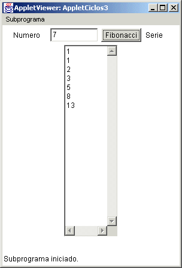

Módulo 2: Estatutos
de Control

2. Ciclos
Estatuto while
Sintaxis
while ( condición )
estatuto;
Si se requiere realizar más de un estatuto se deben utilizar llaves.
while (
condición )
{
bloque de
estatutos;
}
Aquí se ejecuta el (los) estatuto (s) mientras la condición es
verdadera; al momento de ser falsa termina el ciclo.
Si la condición es falsa la primera vez nunca se ejecuta(n) el (los) estatuto(s).
Ejemplo: Applet que toma la cantidad de dinero a invertir, el porcentaje de inversión mensual y el dinero que se quiere tener invertido finalmente y va desplegando en un campo (TextArea) el nuevo saldo mes tras mes.
import java.awt.*;
import java.applet.*;
import java.awt.event.*;
// <applet width="300" height="400" code="AppletCiclos1"></applet>
public class AppletCiclos1 extends Applet implements ActionListener {
Label l1, l2, l3,l4;
TextField t1, t2,t3;
TextArea ta;
Button b;
public AppletCiclos1() {
l1 = new Label("Inversión Inicial");
t1 = new TextField(8);
l2 = new Label("% interes mensual");
t2 = new TextField(5);
l3 = new Label("Inversión Final");
t3 = new TextField(8);
l4 = new Label("Resultados de la Inversión");
ta = new TextArea(20,30);
b = new Button("VER MES");
add(l1);
add(t1);
add(l2);
add(t2);
add(l3);
add(t3);
add(b);
add(l4);
add(ta);
b. addActionListener(this);
}
public void actionPerformed(ActionEvent ae) {
double invinicial = Double.parseDouble(t1.getText());
double interes = Double.parseDouble(t2.getText());
double invfinal = Double.parseDouble(t3.getText());
ta.setText("");
int mes = 1;
double saldo = invinicial;
while (saldo < invfinal) {
saldo = saldo * (1 + interes/100);
ta.append(" mes " + mes + " Saldo = " + saldo + "\n");
mes ++;
}
}
}
Un ejemplo de la ejecución de este applet es:

En este applet hemos utilizado el texto de área TextArea t, el cual nos ayuda a mostrar la información por línea, haciendo uso del método append(), es importante tambien notar que dentro del método append hemos concatenado el caracter "\n", el cual nos sirve para saltar de línea dentro del objeto TextArea, ya que con el append añadimos caracteres que son concatenados, pero nunca se salta de línea.
Estatuto do .. while
Sintaxis
do
estatuto;
while ( condición );
Si se requiere realizar más de un estatuto se deben utilizar llaves.
do
{
bloque de
estatutos;
}
while (
condición ); // nota que lleva ;
Se realizan los
estatutos y se verifica la condición, mientras sea
verdadera se sigue ejecutando; al momento de ser falsa termina
el ciclo.
Dado que la condición se revisa al final del ciclo el (los) estatuto (s) se realizan al menos una vez a diferencia del while
Ejemplo: Dado un número en un campo texto, desplegar en otro el número de dígitos del primero
import java.awt.*;
import java.applet.*;
import java.awt.event.*;
// <applet width="300" height="400" code="AppletCiclos2"></applet>
public class AppletCiclos2 extends Applet implements ActionListener {
Label l1, l2;
TextField t1, t2;
Button b;
public AppletCiclos2() {
l1 = new Label("Numero");
t1 = new TextField(8);
l2 = new Label("Digitos");
t2 = new TextField(20);
b = new Button("SABER DIGITOS");
add(l1);
add(t1);
add(b);
add(l2);
add(t2);
b. addActionListener(this);
}
public void actionPerformed(ActionEvent ae) {
int x = Integer.parseInt(t1.getText());
int cant = 0;
do
{
x = x / 10;
cant++;
} while (x > 0);
t2.setText("El numero tiene " + cant + " digitos");
}
}
La visualización de este applet queda de la siguiente manera:

Estatuto for
Sintaxis
for (inicialización ; condicion ; accion )
estatuto;
Si se requiere realizar más de un estatuto se deben utilizar llaves.
for (inicialización ; condicion ; accion )
{
bloque de estatutos;
}
Funcionamiento del For
- Ejecuta el o los
estatutos de inicialización
- Evalúa la
condición, si es verdadera entra al ciclo
- Ejecuta el o los
estatutos
- Ejecuta la o las acciones y regresa al paso 2
Notas sobre el For
- Las 3 partes del
for son opcionales, si no se pone condición se toma como verdadero.
- Si no se incluye la inicialización o condición, los ; deben de ir.
Ejemplo: for ( ; a > 10 ; a--)
- Si la primera vez
la condición es falsa no se ejecuta ningún estatuto y termina el for
- Una variable puede
declararse en la sección de inicialización, solo hay que tomar en cuenta
que esta variable solo es
reconocida dentro del ciclo.
Ejemplo: for (int num = 1; num < = 10; num++)
Ejemplo I: Mostrar los N primeros números de la serie de Fibonacci. La serie es 1,1,2,3,5,8,13....
import java.awt.*;
import java.applet.*;
import java.awt.event.*;
// <applet width="300" height="400" code="AppletCiclos3"></applet>
public class AppletCiclos3 extends Applet implements ActionListener {
Label l1, l2;
TextField t1;
TextArea t;
Button b;
public AppletCiclos3() {
l1 = new Label("Numero");
t1 = new TextField(8);
l2 = new Label("Serie");
t = new TextArea(20,10);
b = new Button("Fibonacci");
add(l1);
add(t1);
add(b);
add(l2);
add(t);
b. addActionListener(this);
}
public void actionPerformed(ActionEvent ae) {
int n = Integer.parseInt(t1.getText());
t.setText("1" + "\n");
t.append("1" + "\n");
int a = 1, b = 1, fibo;
for (int i = 3; i<= n; i++) // empiezo i en 3 porque ya mostre los 2 primeros
{
fibo = a + b;
t.append("" + fibo + "\n");
a = b;
b = fibo;
}
}
}
El applet ejecutado se visualizaría asi:

Ejemplo II: Sumar todos los números nones desde 1 hasta el número dado por el usuario
import java.awt.*;
import java.applet.*;
import java.awt.event.*;
// <applet width="200" height="200" code="AppletCiclos4"></applet>
public class AppletCiclos4 extends Applet implements ActionListener {
Label l1, l2;
TextField t1,t2;
Button b;
public AppletCiclos4() {
l1 = new Label("Numero");
t1 = new TextField(8);
l2 = new Label("Suma");
t2 = new TextField(8);
b = new Button("Suma");
add(l1);
add(t1);
add(b);
add(l2);
add(t2);
b. addActionListener(this);
}
public void actionPerformed(ActionEvent ae) {
int n = Integer.parseInt(t1.getText());
int suma = 0;
for (int i = 1; i<= n; i++) {
suma += i;
}
t2.setText("" + suma);
}
}
La ejecución del siguiente applet quedaría como:

Ciclo infinito
Cuando en un ciclo la condición siempre es verdadera se dice que es un ciclo infinito, pues nunca saldrá del ciclo y el programa no
termina. Para evitarlos hay que estar seguros que en el bloque de estatutos haya un estatuto que modifique el valor de la
condición de tal modo que llegue a ser falsa.
Ejemplos de
ciclos infinitos
Ejemplo I
En este ejemplo supongamos que en el applet de las inversiones, nos equivocamos en la condición del while y en lugar de tener (saldo < invfinal), tuvieramos (invinicial < invfinal), en este caso, la condición siempre hubiera sido verdadera, pues a quien le estamos acumulando es a la variable saldo, no a invinicial. Este es un error de ejecución difícil de encontrar.
Ejemplo II
En este ejemplo supongamos que en el applet de los dígitos, donde usamos el do while, en la condición del while no tenemos (x > 0) sino que utilizamos por error la variable cant, teniendo while (cant > 0) en lugar de while (x > 0), obviamente esto siempre seria verdad, ya que cant siempre se está incrementando. A su vez este error es difícil de ver.
El applet seguirá ejecutandose (por siempre) y no nos daremos cuenta, es imporante observar que el botón sigue seleccionado, lo cual indica que el applet esta procesando las instrucciónes puestas en el actionPerformed, como se observa en la siguiente figura:

Nunca pondrá nada en el segundo campo de texto y habrá que cancelarlo.
2. Modifica el applet de inversiones para que en lugar de usar el ciclo while, utilice el ciclo do while.
3. Haz un applet que te calcule el factorial de un número N, el cual te dará el usuario, el factorial de un número N, definido matemáticamente como N! se obtiene como la multiplicación de todos los números que están desde el 1 hasta el N = 1 * 2 * 3 * ..... (N-2) * (N-1) * N, como se muestra en la figura:

http://java.sun.com/docs/books/tutorial/java/nutsandbolts/for.html